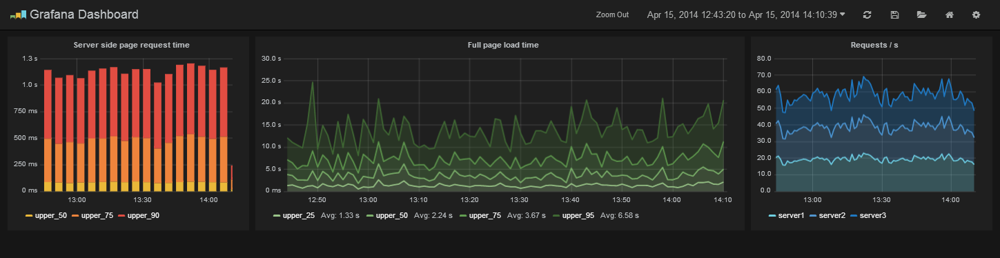
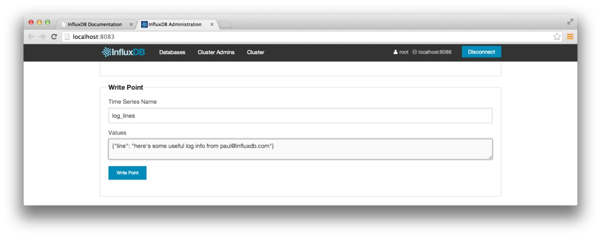
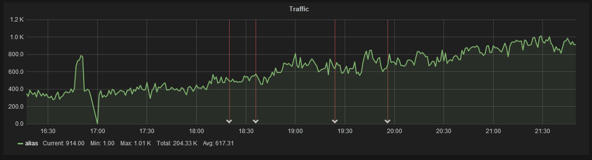

TSDB
InfluxDb a time series database
Created by Gianluca Arbezzano / @GianArb
TSDB
Time series database
It is a software system that is optimized for handling time series data, arrays of numbers indexed by time (a datetime or a datetime range)
Time sieries data
A time series is a sequence of data points, measured typically at successive points in time spaced at uniform time intervals
Why?
- Real time
- Easy
- Scalable
- Http api & Client(php, python, ruby...)
- Single source
other possibility
- Google Analytics
- Amazon CloudWatch
- ...
InfluxDB
An open-source distributed time series database with no external dependencies
it is written in Golang

wget http://s3.amazonaws.com/influxdb/influxdb_latest_amd64.deb
sudo dpkg -i influxdb_latest_amd64.deb
Open Source

Grafana
An open source, feature rich metrics dashboard and graph editor for Graphite, InfluxDB & OpenTSDB.
Getting Start
curl -X POST
-d '[
{
"name" : "hd_used",
"columns" : ["value", "host", "mount"],
"points" : [
[23.2, "serverA", "/mnt"]
]
}
]'
'http://localhost:8086/db/mydb/series?u=root&p=root'
More points for insert
[
{
"name": "log_lines",
"columns": ["time", "sequence_number", "line"],
"points": [
[1400425947368, 1, "this line is first"],
[1400425947368, 2, "and this is second"]
]
}
]
Implement UDP protocol
[input_plugins.udp]
enabled = true
port = 4444
database = "search"
InfluxDB is down? Your APP works!
Benchmark UDP vs TCP
Corley\Benchmarks\InfluxDB\AdapterEvent
Method Name Iterations Average Time Ops/second
------------------------ ------------ -------------- -------------
sendDataUsingHttpAdapter: [1,000 ] [0.0026700308323] [374.52751]
sendDataUsingUdpAdapter : [1,000 ] [0.0000436344147] [22,917.69026]
Query
curl 'http://localhost:8086?u=root&p=root&q=select * from log_lines limit 1'
[
{
"name": "log_lines",
"columns": ["time", "sequence_number", "line"],
"points": [
[1400425947368, 287780001, "here's some useful log info"]
]
}
]
Admin Panel:8083
Features
- Create database
- Manage users
- Query and Graphs
Grafana
Is an OpenSource Javascript Dashboard
- Drag and drop panels
- Click and select region to zoom
- Bars, Lines, Points
- Mix lines, bars and points
- InfluxDB query editor
- Annotation lines
Annotations?!
You can mark deploy and monitoring differences between two versions
corley/influxdb-php-sdk
Another influxdb SDK writte in PHP
Install
php composer.phar require corley/influxdb-sdk:dev-masterAdapter System
Very flexible
- UDP Adapter
- Guzzle Adapter
- Your implementation..
Create Client
$options = new \InfluxDB\Options();
$adapter = new \InfluxDB\Adapter\UdpAdapter($options);
$client = new \InfluxDB\Client();
$client->setAdapter($adapter);
Factroy pattern
$options = [
"adapter" => [
"name" => "InfluxDB\\Adapter\\GuzzleAdapter",
"options" => [
// guzzle options
],
],
"options" => [
"host" => "my.influx.domain.tld",
],
"filters" => [
"query" => [
"name" => "InfluxDB\\Filter\\ColumnsPointsFilter"
],
],
];
$client = \InfluxDB\ClientFactory::create($options);
Mark your event
$client->mark("error.404", ["page" => "/a-missing-page"]);
$client->mark("app.search", $points, "s");
Query
$influx->query("select * from mine");
$influx->query("select * from mine", "s");
$client->setFilter(new ColumnsPointsFilter());
$data = $client->query("select * from hd_used");
Future
Star this project
Use it and help us with your issues & PR